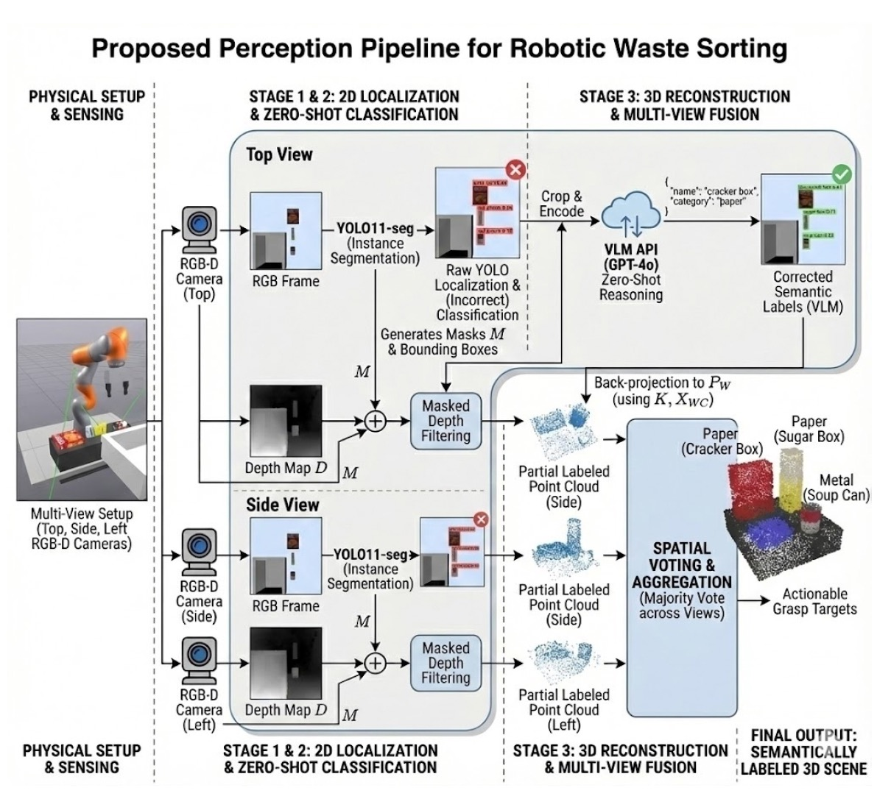
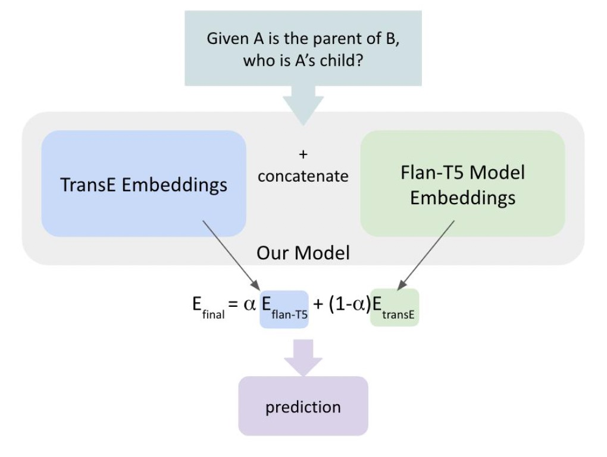
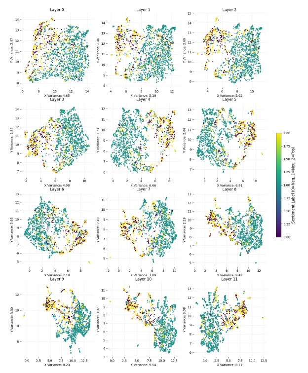

Course projects and independent explorations across robotics, NLP, knowledge graphs, and financial ML.

Built a simulation-based robotic sorting system in Drake that automates the identification, grasping, and placement of recyclables from a mixed pile. The perception pipeline uses YOLO11 for object localization and GPT-4o for zero-shot material classification — so the robot can categorize items it's never seen before based on visual reasoning rather than pattern matching.
For manipulation, we combined multi-view point cloud fusion for geometry-aware grasp planning with a dynamic throwing primitive based on analytical ballistic modeling. Instead of slowly placing objects into bins, the robot calculates trajectories and tosses them — decoupling cycle time from workspace size.

Mitigated the "Reversal Curse" in LLMs by integrating Knowledge Graph embeddings and symmetry-aware training to enable bidirectional logical inference. Developed a model-agnostic methodology that improves reverse-relationship reasoning without requiring architecture-level modifications.
Nov – Dec 2024
Conducted a comprehensive layer-wise evaluation of FinBERT and BERT embeddings for financial sentiment classification. Used UMAP visualization to inspect intermediate transformer layers and understand how financial domain knowledge is encoded across the network.
Oct – Dec 2024